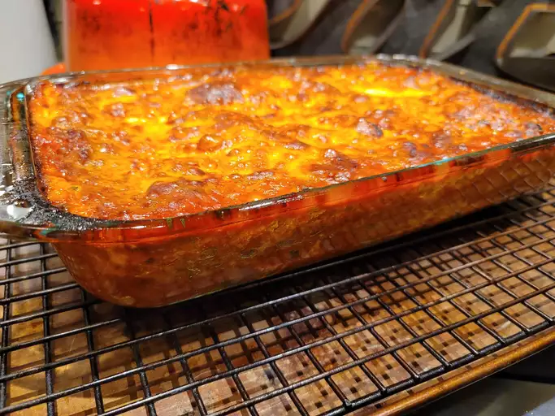

lasagna

How to make delicious homemade lasagne
This is an adaptation of the official lasagne from the Bolognese Chamber of Commerce.
The ragu is an authentic sauce,simple without garlic or herbs and spices.
Using fresh pasta keeps you from having to pre-boil it
Ingredients
- Lasagna noodles
- Ground beef or Italian sausage
- Onion
- Garlic
- Canned diced tomatoes
- Tomato sauce
- Tomato paste
- Dried oregano
- Dried basil
- Salt
- Pepper
- Ricotta cheese
- Parmesan cheese
- Mozzarella cheese
- Fresh parsley (optional)
Steps
- Preheat your oven to 350°F (180°C).
- Cook the lasagna noodles according to the package instructions. Drain the noodles and set them aside.
- In a large skillet, cook the ground beef or sausage over medium heat until it is browned. Drain any excess fat.
- Add the diced onion and minced garlic to the skillet and cook until the onion is translucent.
- Stir in the canned diced tomatoes, tomato sauce, tomato paste, oregano, basil, salt, and pepper. Bring the mixture to a boil, then reduce the heat to low and simmer for 10-15 minutes.
- In a separate bowl, mix together the ricotta cheese, parmesan cheese, and a handful of chopped fresh parsley (if using).
- Spread a small amount of the meat sauce in the bottom of a large baking dish. Place a layer of cooked lasagna noodles on top of the sauce.
- Spread a layer of the cheese mixture over the noodles.
- Repeat the layers of sauce, noodles, and cheese until you have used up all of the ingredients, ending with a layer of cheese on top.
- Cover the dish with aluminum foil and bake for 30